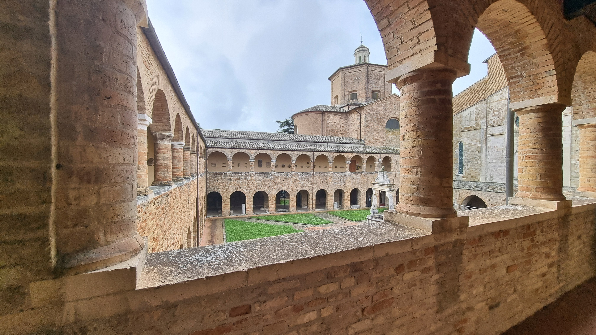

Un viaggio immersivo tra arte, storia e spiritualità nel cuore dell'Abruzzo
Il Museo Capitolare di Atri custodisce secoli di storia, arte e devozione. Questo tour virtuale, realizzato dagli studenti della classe 3A del Liceo Scientifico opzione Scienze Applicate del Polo Liceale "Saffo", documenta e rende accessibile il patrimonio storico-artistico della Cattedrale di Santa Maria Assunta e del Museo Capitolare di Atri.
Entra nel Tour Virtuale
Il Progetto
Nell'ambito del percorso di Formazione Scuola–Lavoro, gli studenti della classe 3A del Liceo Scientifico opzione Scienze Applicate del Polo Liceale "Saffo" hanno realizzato un tour virtuale della Cattedrale di Santa Maria Assunta e del Museo Capitolare di Atri, sviluppato attraverso visite sul campo, ricerca storico-artistica e produzione digitale dei contenuti.
Esperienza Immersiva
Esplora gli ambienti della Cattedrale e del Museo Capitolare di Atri attraverso il tour virtuale realizzato dagli studenti.
Il Patrimonio
Il tour accompagna il visitatore attraverso gli ambienti e i capolavori della Cattedrale e del Museo Capitolare, testimoni di millenni di storia abruzzese.
Collaborazioni e Ringraziamenti
Si ringraziano tutte le persone che hanno contribuito alla sua realizzazione e tutte le figure istituzionali che ne hanno permesso lo svolgimento.
Il Dirigente Scolastico
Prof. Achille Volpini
Direzione del Museo
Prof.ssa Gina Martella
Tutor Esterno
Dott.ssa Eleonora Varani
COLLABORATORI D.S.
Proff. Antonella Torrieri e Michele Trocchio
Docente di Italiano
Prof.ssa Angela Modestini
Tutor Interno
Prof.ssa Annalisa Mastrogiacomo
Segreteria Servizi Amministrativi Contabili e Patrimonio
Dott.ssa Milena Colli
Liceo Saffo
Collaboratori Scolastici
Struttura Ospitante
Museo Capitolare di Atri
L'Istituto
Il progetto "Custodi di Storie" è stato realizzato dagli studenti del Polo Liceale "Saffo" nell'ambito del percorso di Formazione Scuola–Lavoro, in collaborazione con il Museo Capitolare di Atri.
Visita il sito del Polo Liceale Saffo